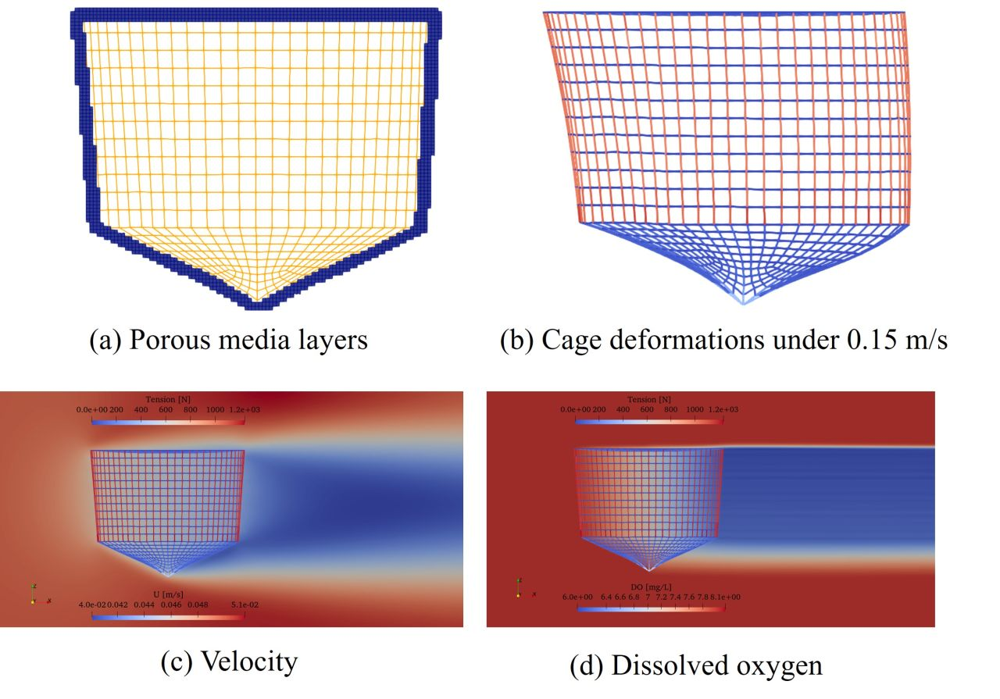

← Back to Publications Influence of ocean currents and stocking density on the dissolved oxygen distribution inside gravity-type fish cages Xueliang Wen, Muk Chen Ong, Guang Yin, Tord Ludvigsen, Frode Oppedal2025  AbstractRead the original abstract on the publisher’s website ↗Read the published article ↗ Publication typeJournal articleJournalJournal of Offshore Mechanics and Arctic EngineeringVolume147Issue6Article number061301DOI10.1115/1.4069238